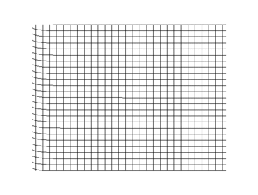
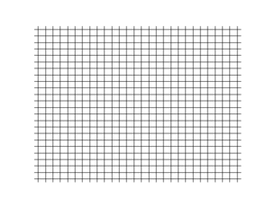
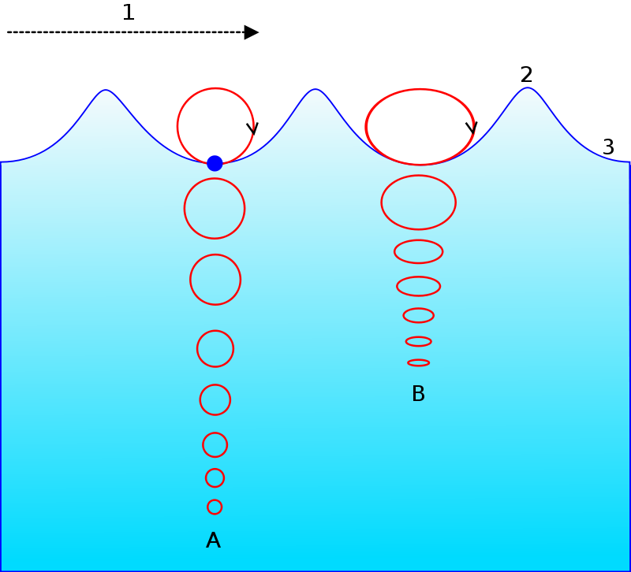
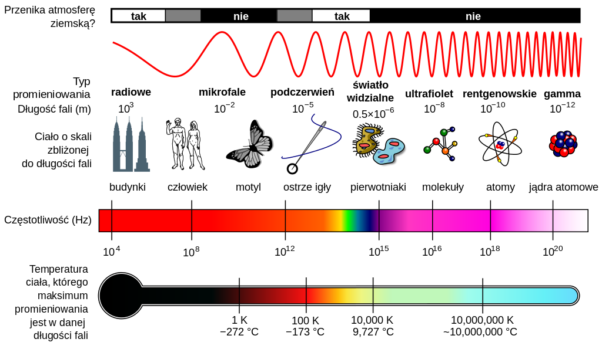

Strona ma na celu przybliżyć fizyczne zjawisko ruchu harmonicznego oraz fali. W tym celu należy rozpocząć od następujących definicji:
Drganiami, ogólnie nazywamy zbiór procesów, w trakcie których wielkości fizyczne na przemian rosną lub maleją w czasie. Ponieważ zaprezentujemmy zjawisko fali, najistotniejsze będą tzw. drgania mechaniczne.
Drgania mechaniczne to rodzaj drgań, w których zmienia się położenie konkretnego obiektu, może to być zarówno wahadło matematyczne, masa na sprężynie, ale także cząsteczki np. wody, lub powietrza.
Falą nazywamy zaburzenie rozprzestrzeniające się w ośrodku lub przestrzeni. Cząstki ośrodka drgają wokół położeń równowagi. Jeśli znajdujemy się w ośrodku sprężystym rozprzestrzenianie się drgań cząsteczek tego ośrodka nazywane jest falą mechaniczną. Charakterystyczny jest fakt, że przenosząc energię, fala nie przenosi żadnej masy.
Jednak przeczytać to nie to samo co zobaczyć. Czas zaprezentować te zjawiska fizyczne.
Źródło: wikipedia.org
Oscylacje cząstki
Jak mogliśmy przeczytać w definicji, do wystąpienia zjawiska zwanego falą mechaniczną niezbędne jest wystąpienie drgań cząstek ośrodka sprężystego. Poniższa animacja prezentuje oscylacje dla jednej cząstki.
Drgająca w ten sposób cząstka jest prostym przykładem oscylatora harmonicznego, czyli układu, który możemy opisać równaniem oscylatora harmonicznego:
Równanie to ma wiele rozwiązań, jednym z nich jest:
które określa położenie obiektu w chwili czasowej t.
Gdzie: A - amplituda(maksymalne wychylenie ciała z położenia równowagi); φ - faza drgań; ω - częstość kołowa(zależna od masy oraz sprężystości);
Źródło: wikipedia.org
Rodzaje fal
Takie drgające cząstki, jak ta przedstawiona powyżej, mogą być cząstkami powietrza, lub wody. Jeśli takie zaburzenie oscylacji propaguje się w takim ośrodku w szerszej skali niosąc energię, powstaje fala mechaniczna. Wśród fal wyróżniamy wiele rodzajów, dotyczy ich także kilka ciekawych zagadnień.
Fala Poprzeczna
Fala Podłużna
Fala Morska
Fala Stojąca
Fale Elektromagnetyczne
Fala poprzeczna - fala, w której kierunek drgań cząstek ośrodka jest prostopadły do kierunku rozchodzenia się fali. Posługując się przykładem naszej cząstki, fala w tej sytuacji rozchodziła by się w pionie, wzdłuż osi OY, ponieważ nasza cząstka drga wzdłuż osi OX. Przykładem tych fal są fale elektromagnetyczne. Ten rodzaj nie może rozchodzić się w cieczach, a jedynie w ciałach stałych. Kolejny przykład, to fala powstała na linie.

Źródło: wikipedia.org
Fala podłużna - fala, w której kierunek drgań cząstek ośrodka jest równoległy do kierunku rozchodzenia się fali. W przykładzie naszej cząstki, fala propagowałaby się wzdłuż osi OX, czyli tak samo, jak kierunek drgań cząsteczki. Jest to typowa fala mechaniczna rozchodząca się w gazie, a zatem fala dźwiękowa, najpopularniejszy przykład fali podłużnej.

Źródło: wikipedia.org
Fala morska - wbrew pozorom bardziej skomplikowany rodzaj ruchu falowego. W istocie jest to superpozycja, czyli złożenie fal poprzecznych i podłużnych. Dotyczy oczywiście cząsteczek wody zgromadzonych w zbiorniku wodnym, na przykład morzu, poddanych działaniu wiatru, lub w skrajnych przypadkach ruchów sejsmicznych.

Źródło: wikipedia.org
Fala stojąca - fala, której grzbiety i doliny nie przemieszczają się. Idealna fala stojąca taka jak przedstawiona na rysunku, to taka, której elementy, czyli węzły i strzałki pozostają w tych samych miejscach, nie przemieszczają się. Nie występuje tu propagacja drgań. Jest ona efektem interferencji dwóch fal o tym samym kierunku, ale przeciwnych zwrotach, często pomiędzy falą padającą, a odbitą. Jest wykorzystywana na przykład w pudłach rezonansowych do wzmacniania dźwięków.
Źródło: wikipedia.org
Fale elektromagnetyczne - zaburzenie pola elektromagnetycznego. Własności takiej fali zależą od długości fali. Najdłuższe fale, to fale radiowe, następnie mikrofale, później a skali znajduje się spektrum promieniowania widzialnego, następnie fale są coraz krótsze, przez ultrafiolet, rentgenowskie aż do promieniowania gamma. Dokładne wartości prezentuje poniższy wykres.

Źródło: wikipedia.org
Interferencja fal
Bardzo ciekawym i istotnym w wykorzystaniu dla ruchu falowego zjawiskiem jest interferencja fal. Jest to powstanie nowego rozkładu amplitudy fali poprzez superpozycję dwóch lub więcej fal spójnych, czyli takich równych częstotliwościach i odpowiednio skorelowanych fazach. W praktyce wygląda to tak, że jeżeli w dwóch fala bięgnacych razem w tym samym miejsc wystąpi szczyt, uzyskamy podwójne wzmocnienie, natomiast jeśli grzbiet zejdzie się z punktem dolnego wychylenie, fale się wygaszą. Prezentuje to poniższy film.
Źródło: physics-animations.com i youtube.com
Wykresy drgań
Najwygodniejsze w obserwacji i analizie ruchu harmonicznego są wykresy. Poniżej zatem proste narzędzie do rysowania wykresów zależności położenia od czasu dla zadanej amplitudy i częstotliwości z możliwością dodania tłumienia (domyślnie 0). Pod wykresem symulacja pokazująca wygląd takiego ruchu na poruszającej się cząstce, oraz aktualizowane wartości energii kinetycznej i potencjalnej.
Amplituda
Częstotliwość
Tłumienie
Statystyki ruchu harmonicznego, energia kinetyczna i potencjalna (bez tłumienia):